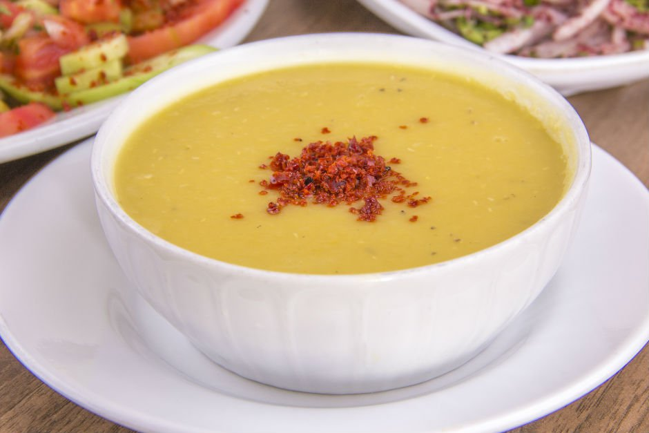

Rode Linzensoep
Een klassiek Turks recept voor Rode linzensoep oftewel Mercimek Çorbası
Ingrediënten
- Olie, zout
- 4 theelepels paprikapoeder
- 4 theelepels gemalen komijnzaad
- Een grote ui
- Een paar tenen knoflook
- Bouillonblokjes voor 1 liter (groente- of kruidenbouillon)r
- 175g rode linzen
- Flinke klont boter
- Eetlepel salça (of tomatenpuree)
Bereidingswijze
- Fruit de ui met de olie en een beetje zout tot het glazig, gelig is.
- Doe de knoflook erin en laat het een halve minuut warm worden.
- Doe er 5 mokken kokend water bij (uit de waterkoker).
- Dan gooi ik alles erin, de paprikapoeder, de bouillonblokjes, de linzen (gewassen) en eventueel de aardappel(s) en wortel. Dan laat je het op een zacht pitje ongeveer 3 kwartier a een uur koken.
- Als laatste pak je een steelpannetje, daar doe je het komijnzaadpoeder in en je zet gas vol aan. Als je het komijn begint ruiken, dan doe je de boter erbij. Als de boter gesmolten is de salca erbij en dat laat je even op het gas ongeveer een minuut pruttelen (tot het goed gemengd is).
- Gooi het bij de rest van de soep en pureer alles met de staafmixer. En dan Afiyet Olsun (eet smakelijk)

Tip je kan er wat peterselie in doen of een gedroogd pepertje om het pittig te maken!